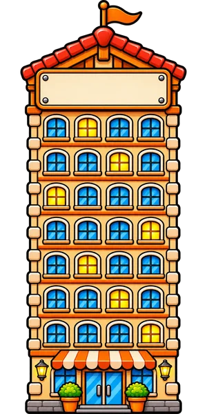

Dla firm
Cztery sposoby, żeby firma stanęła na ulicy zbiórki. Pieniądze zawsze idą prosto do organizacji prowadzącej zbiórkę; my liczymy kilometry.
LICZNIKUlica akcji BiegaMy
Jak wejść na ulicęCztery sposoby, każdy widać na ulicy
ASponsor kilometrów
Firma deklaruje stawkę za każdy kilometr ulicy, z górnym limitem, i sama wpłaca na zbiórkę organizacji w transzach, gdy ulica mija progi celu. Na liczniku ulicy stoi: „każdy kilometr dokłada …”.
Limit = stawka × cel ulicy. Firma wpłaca sama, bezpośrednio na oficjalną zbiórkę, po każdym progu; BiegaMy tylko pokazuje, że próg minął. Deklaracja do druku na dole strony.
BOpiekun odcinka
Ulica ma odcinki po 100 km. Firma bierze jeden albo kilka; przy odcinku stoi tabliczka z jej nazwą, a kilometry ludzi budują właśnie ten kawałek drogi.
CDomek, wieżowiec, partner rzeczowy
To, co już działa na stronie akcji: formularz zgłoszenia, tablica z logo na budynku, wizytówka po dotknięciu domku. Firma jako partner rzeczowy daje rzecz albo usługę zamiast wpłaty (na przykład nagrody dla biegaczy).

Twoja firmaDFirma biegnie sama
Drużyna pracowników biega i chodzi, kilometry wchodzą na ulicę, a firma dokłada za każdy kilometr własnych ludzi. Na ulicy stoi ranking drużyn.
Ranking wymyślony na potrzeby pokazu (PRZYKŁAD). W prawdziwej akcji kilometry drużyny to kilometry jej ludzi zapisane w BiegaMy; firma dokłada według swojej deklaracji, wpłatą na zbiórkę.
PieniądzeJak płyną pieniądze
Partner Miasta Dobra (w przygotowaniu): wsparcie samej platformy, osobno od zbiórek, bez cen na tej stronie. To jedyny przypadek, w którym pieniądze trafiałyby do BiegaMy, i zawsze osobnym tytułem.
GraniceKogo nie przyjmujemy i czego firma nie kupuje
Nie przyjmujemy firm z branż:
Firma nie kupuje:
Do pobraniaPodziękowanie dla firmy
Nazwa firmy z pola wyżej, liczby ulicy z publicznego licznika, domek z ulicy. Powstaje w przeglądarce; nic nie idzie na serwer.
Do druku i PDFOferta i deklaracja
Oferta na jedną stronę A4 z tej samej treści, z miejscem na datę i kontakt. Deklaracja sponsora kilometrów jako WZÓR do przejrzenia przez prawnika. W oknie druku wybierz „Zapisz jako PDF”.
Strona pokazowa Miasta Dobra dla firm. Liczby ulicy pochodzą z publicznego licznika akcji; progi kwot to przykład z tej ulicy, nie cennik. Nic nie jest zapisywane poza Twoją przeglądarką i nic nie jest wysyłane. Polityka prywatności